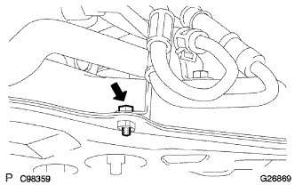

Power steering link assertion |
| 1. Power steering link assertion |
 |
Attach Gromet No.2 to the steering link asser.
Align the matching mark and attach the bracket No.2 to the steering link assembly.
 |
With four bolts and nuts each, the steering link Assign and bracket No.2 are temporarily attached to the cross member.
Tighten the four mounting bolts.
| 2. Steering interimide shaft installation |
 |
Align the matching mark and attach the interview with the interruption valve to the control valve with the bolt.
| 3. Steering column hole cover SUB-ASSY No.1 Installation |
Install the cutout of the hole cover No. 1 according to the projection of the control valve housing.
| 4. Power Steering Rack Housing Heat Insulator Mounting |
 |
Fit the hole of the heat -in sea letter with the hole cover No.1 protrusion.
At the bolt, attach the heat -insulator.
| 5. Front suspension cross member SUB-ASSY installation |
 |
Support the cross member with a mission jack.
With four bolts, the cross member is tentatively attached to the body.
Insert the SST into the criteria of the cross member RH side and the vehicle RH side, and temporarily tighten the bolt while adjusting the bolt hole position.
 |
The SST is inserted into the cross member LH side and the vehicle LH side, and the two bolts are temporarily tightened while adjusting the bolt hole position.
The SST is inserted into the cross member RH side and the vehicle RH side and tightened with a specified torque.
The SST is inserted into the criteria LH side and the vehicle LH side and tightened with a specified torque.
Remove the mission jack from the cross member.
 |
With two bolts and two nuts, attach the engine mountain mounting in -sijerter RR to the cross member.
Remove the sling device and chain block.
| 6. Pressive tube associated |
|  |
Temporary Pecha Feed Cheube ASSY to the steering link asser.
In the bolt, attach the cramps of the Betsu Shiya Fweed Uve ASSY to the cross member.
 |
Use Union Nut wrench 17 to tighten the Betsushiya Fweed Uve ASSY.
| 7. Exhaust pipe Assisted FR installation |
Use caliper to measure the free length of the compression spring.
 |
The new gasket is gradually driven to the exhaust manifold, using a piece of wood and a hammer.
Attach the exhaust front pipe ASSY to the exhaust manifold.
| 8. Front drive shaft Assisted asSY LH |
Apply the auto fluid type T-IV to the spline of the inboord joint Assy LH.
 |
The shaft spline is used, and the drive shaft Assemer is inserted using a brass bar and a hammer.
| 9. Front drive shaft Assisted |
| 10. Lord axle ASSY LH installation |
Press the front axle ASSY to the outside of the vehicle, and insert the drive shaft ASSY spline into the axle ASSY and insert it.
| 11. Lord Axle assess installation |
| 12. Tie rod end sub-assy LH installation |
Attach the tie rod end to the steering knuckle and tighten with a castle nut.
Attach a new cottal pin.
| 13. Tie rod end sub-assy RH installation |
| 14. Front suspension Lower arm No.1 LH installation |
Attach it to the steering knuckle of the Lower Arm ASSY and tighten it with a castle nut.
Attach a new clip.
| 15. Front suspension Lower arm No.1 RH installation |
| 16. Stabilizer bar FR installation |
Attach 2 cushions retainer No. 1, 2 cushions and stabilizer bars in the direction of the figure, and tighten with a nut.
 |
Fix the stabilizer bolt with a spanner (10mm) and tighten a new nut.
| 17. Speed sensor FR LH installation |
In the bolt, attach the speed sensor wire and flexible hose to the shock absorber ASSY.
 |
Attach the critip to the shock absorber ASSY.
 |
Attach the speed sensor FR to the steering knuckle with bolts.
| 18. Speed sensor FR RH installation |
| 19. Front axle shaft nut LH installation |
Use a Soketsu trench (30mm) to attach a new hub nut.
 |
Use tagane and hammer to squeeze the nut.
| 20. Lord axle shaft nut RH installation |
| 21. Engine undercover RH installation |
With two screws and two bolts, attach the engine undercover RH.
Tighten the nut.
| 22. Engine Anda cover LH installation |
With two screws and two bolts, install the engine undercover LH.
| 23. Installation of front tires |
| 24. Steering sliding York SUB-ASSY connection |
 |
Align the matching mark and connect the sliding yoke with bolts.
Fix the sliding yoke with two bolts.
| 25. Front tire direct condition inspection |
| 26. Steering column hole cover SUB-ASSY No.1 Installation |
 |
Attach clip A and attach the No. 1 and clip B to the body.
| 27. Steering column hole cover plate installation |
 |
Attach the steering column hole cover plate with two clips.
| 28. Power steering fluid replenishment |
| 29. Power steering fluid air |
Lift up the vehicle.
Slowly perform the lock -lock of the steering wheels while stopping the engine.
Lift the vehicle.
Start the engine without stepping on the accelerator pedal and leave it for a few minutes.
The engine speed is 1000R/min or less, and the steering wheel lock -lock is repeated several times.
With an engine speed of 1000R/min or less, the steering wheels are kept maintained (holding 5-6 seconds with the steering wheels filled in full) at 2-3 seconds.
After stopping the engine until the oil reservoir bubbles and the cloudiness disappear, the engine starts again and confirms that there is no foaming and cloudiness even if it is locked lock or unpacked in idling rotation.
Perform oil reservoir level level inspection.
| 30. Fluid quantity inspection |
Let the vehicle horizontal.
The engine speed is 1000R/min or less, repeating the lock -locking of the steering wheels to increase the fluid oil temperature.
Remove the reservoir bakyatsu from the oil reservoir.
Make sure that there is no fluid foaming and cloudiness from the oil reservoir's mouth.
Measure the difference in the fluid level between the engine rotation and the stop.If it is outside the reference value, the air should be removed.If the effect is not effective without air, check the fluid leakage of the hydraulic system.
 |
Inspect that the fluid level is within the standard.If it is less than the standard, replenish the power steering fluid so that the upper limit is within the standard range.
 |
Attach a reservoir bakiya tup and reservoir!
| 31. Fluid leak inspection |
Check for fluids from the location in the figure.

| 32. Exhaust gas leak inspection |
| 33. Front wheel alignment inspection / adjustment |
reference